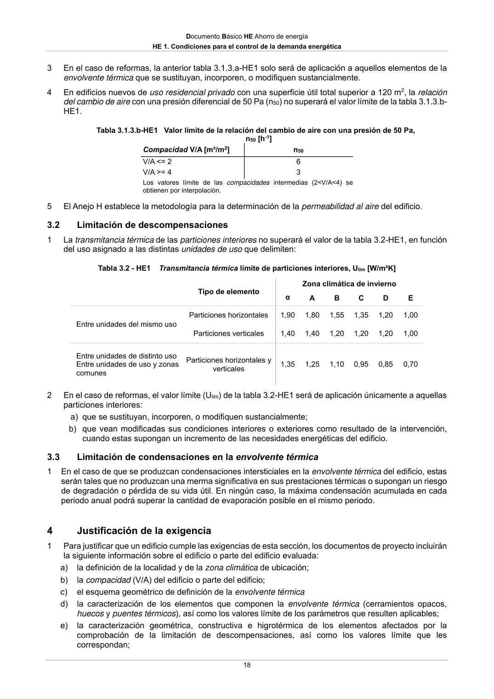

DB-HE Ahorro de energía · edición 2022-06-14 · capa oficial
Documento DB-HE-oficial · SHA-256 del PDF 7f890bd495552e979f83f72c5f5c7b642e745911a8e343a7b5b73023ce0e1f05
Copia fiel del PDF fuente · Fuente oficial
Ficha de la disposición en la fuente oficial
Formatos: JSON del segmento · Markdown
3.1.3 Permeabilidad al aire de la envolvente térmica 1 Las soluciones constructivas y condiciones de ejecución de los elementos de la envolvente térmica asegurarán una adecuada estanqueidad al aire. Particularmente, se cuidarán los encuentros entre huecos y opacos, puntos de paso a través de la envolvente térmica y puertas de paso a espacios no acondicionados. 2 La permeabilidad al aire (Q100) de los huecos que pertenezcan a la envolvente térmica no superará el valor límite de la tabla 3.1.3.a-HE1: Tabla 3.1.3.a-HE1 Valor límite de permeabilidad al aire de huecos de la envolvente térmica, Q100,lim [m3/h·m2] Zona climática de invierno α A B C D E Permeabilidad al aire de huecos (Q100,lim)* ≤ 27 ≤ 27 ≤ 27 ≤ 9 ≤ 9 ≤ 9 * La permeabilidad indicada es la medida con una sobrepresión de 100Pa, Q100. Los valores de permeabilidad establecidos se corresponden con los que definen la clase 2 (≤27 m3/h·m2) y clase 3 (≤9 m3/h·m2) de la UNE-EN 12207:2017. La permeabilidad del hueco se obtendrá teniendo en cuenta, en su caso, el cajón de persiana. Documento Básico HE Ahorro de energía HE 1. Condiciones para el control de la demanda energética 18 3 En el caso de reformas, la anterior tabla 3.1.3.a-HE1 solo será de aplicación a aquellos elementos de la envolvente térmica que se sustituyan, incorporen, o modifiquen sustancialmente. 4 En edificios nuevos de uso residencial privado con una superficie útil total superior a 120 m2, la relación del cambio de aire con una presión diferencial de 50 Pa (n50) no superará el valor límite de la tabla 3.1.3.b- HE1. Tabla 3.1.3.b-HE1 Valor límite de la relación del cambio de aire con una presión de 50 Pa, n50 [h-1] Compacidad V/A [m³/m2] n50 V/A <= 2 6 V/A >= 4 3 Los valores límite de las compacidades intermedias (2<V/A<4) se obtienen por interpolación. 5 El Anejo H establece la metodología para la determinación de la permeabilidad al aire del edificio. 3.2 Limitación de descompensaciones 1 La transmitancia térmica de las particiones interiores no superará el valor de la tabla 3.2-HE1, en función del uso asignado a las distintas unidades de uso que delimiten: Tabla 3.2 - HE1 Transmitancia térmica límite de particiones interiores, Ulim [W/m²K] Tipo de elemento Zona climática de invierno α A B C D E Entre unidades del mismo uso Particiones horizontales 1,90 1,80 1,55 1,35 1,20 1,00 Particiones verticales 1,40 1,40 1,20 1,20 1,20 1,00 Entre unidades de distinto uso Entre unidades de uso y zonas comunes Particiones horizontales y verticales 1,35 1,25 1,10 0,95 0,85 0,70 2 En el caso de reformas, el valor límite (Ulim) de la tabla 3.2-HE1 será de aplicación únicamente a aquellas particiones interiores: a) que se sustituyan, incorporen, o modifiquen sustancialmente; b) que vean modificadas sus condiciones interiores o exteriores como resultado de la intervención, cuando estas supongan un incremento de las necesidades energéticas del edificio. 3.3 Limitación de condensaciones en la envolvente térmica 1 En el caso de que se produzcan condensaciones intersticiales en la envolvente térmica del edificio, estas serán tales que no produzcan una merma significativa en sus prestaciones térmicas o supongan un riesgo de degradación o pérdida de su vida útil. En ningún caso, la máxima condensación acumulada en cada periodo anual podrá superar la cantidad de evaporación posible en el mismo periodo. 4
